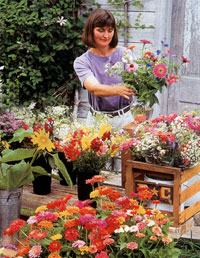
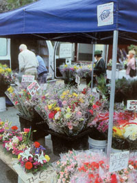
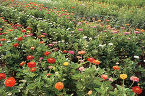
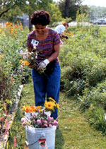
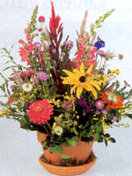
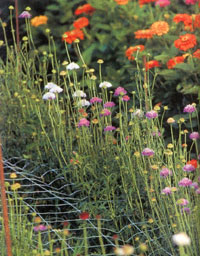
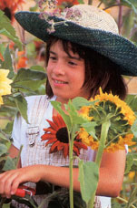

I get up at down and drink a cup of coffee on the porch as the red sun inches over the hillside. Then I head down to the field, just a stone's throw from the house, and wade into the neat rows of zinnias, sunflowers, salvia and celosia. As I focus on cutting stems and counting the flowers, all other thoughts drift away. It's a typical summer morning in the life of this flower farmer.
My husband joins me in the field, and by 8:30 a.m. we're ready to load the buckets of flowers into the van. I eat breakfast with my two children. take a quick shower, then drive the 30 miles into town to the florist. I spend a few minutes hanging around the shop, chatting with the designers, then I pick up my check-usually $300 to $500 per delivery-and head home.
Flower farming may he the perfect home business. You can set your own hours, work outdoors and earn a decent wage. Your spouse and/or children can help. You can work as much or as little as you choose-you really are your own boss.
Even after 14 years of running my own flower business, I still enjoy almost every aspect of the job, from studying catalogs and planning crops during the winter, to cutting thousands of stems from spring until fall.
I don't want to suggest that flower farming is easy-it is farming, after all. You have to bend, stoop and sweat. Your hands get callused and dirty, and your back gets sore. And you don't get rich doing it. As a beginning flower farmer, you probably won't snake much money at all. But as your knowledge and skills increase, as you learn what to grow and how to sell it, you'll find that flower farming can become a profitable endeavor for your family.
Cut flower growers in the United States report that an acre of well-grown and marketed flowers is worth approximately $25,000 to $30,000 in sales. Net income is much less than that, depending on factors such as equipment and supply expenses. whether or not employees are hired (all you'll need is one person per acre to handle production) and whether or not money is put back into the business. As a general rule of thumb, an established business will net 50 percent to 60 percent of its gross. or about $15.000 an acre.
GETTING STARTED
If you think flower farming might be the business for you, there's no time like the present to get started. You need to do a lot of research before you buy a single seed. so winter is the perfect time to plan your strategy. My book, The Flower Farmer, provides a guide to starting a cut flower business. including information on production, harvest, marketing, pricing and suppliers.
First consider where you will sell your flowers. Study the options available and get a general sense of your area's market for flowers. Here are the most likely buyers:
1. Farmer's markets. Flowers sell best in urban markets, but even a small community can have a good farmer's market where customers are eager to buy flowers along with their produce. Identify the markets within driving distance, contact the managers to learn whether or not they have space for a new vendor, and find out what you have to do to get accepted. Be familiar with the market's opening and closing dates, so you can focus on flowers that are blooming during those months.
2. Retail florists. Go through the phone book to identify upscale florists in your market area. They are the people who will be most interested in locally grown flowers. Visit the shop, tell the fresh-flower buyer your plans, and leave a business card with a promise to get in touch when your crops are ready. Don't expect commitment from a florist-he or she will need to see your flowers before deciding to become a customer. Just try to gauge the florist's level of interest so you'll know who is most likely to buy when the time comes.
3. Floral wholesalers. As intermediaries between growers and florists, wholesalers pay the least. But in many cases, they can buy the most, so if you live in a remote area and want to only occasionally drive to the city, a wholesaler may he the best choice. It never hurts to pay them a visit, especially because most floral wholesalers also sell the supplies you will need, such as floral preservative. Ask to talk to the local flower buyer and tell them your plans. Again, don't expect a commitment: At this point, all you're looki ng for is a contact person you can call later when you have something to sell.
4. Supermarket sales. Most big grocery stores now have floral departments, and some may be willing to buy from a local grower. Be aware, though, that your products are not the typical flowers sold at supermarkets, so you may have to do some educating to get the buyer interested. If established floral department buyers don't show any interest, you might be better off trying to introduce flowers into a store that doesn't currently offer them.
5. On-farm sales. If your farm is near a well-traveled road or tourist area, you may be able to sell your flowers fresh from the field. You can set up a roadside stand, with an honor system pay box, or you can offer flowers on a pick-your-own basis.
Start with one of the five markets listed above, because you can sell there consistently. Over time, once your flower growing talent becomes known, you might branch out and sell to restaurants, brides and business offices.
WHAT TO GROW
There are hundreds of flower species that make good cut flowers-your job is to select appropriate varieties from the multitudes. Choose flowers that will, above all, bloom when you have a market for them. Tulips, for example, are not a good choice if you plan to sell at a farmer's market that doesn't open until June.
Select flowers that grow well in your climate. Although you may love delphiniums, you probably won't get much production from them if you live in a windy, hot area. And be sure to choose varieties that are tall enough to make good cut flowers. Many have the same common names as low-growing bedding plants.) Grow flowers that have at least a six-day vase life. For a list of the easiest summer annuals, see "Top Annuals for Cut Flowers" on Page 22. Because these varieties can be started in March from seed and planted out in the garden after the risk of frost has passed, they are ideal for a beginning grower. All bloom in mid-summer, perfectly coinciding with the selling season at farmer's markets. Use this flower menu your first year, adding perennials, bulbs and fall-seeded annuals to your mix the next year.
Seed and flower plant catalogs are invaluable resources for the cut dower grower. The com panies listed in "Seed and Plant Sources" on Page 23 specialize in cut flowers. Study these companies' catalogs and you'll be a knowledgeable flower grower in no time.
Some growers with excellent soil on their flower farms are able to direct-seed most varieties, but for the rest of us, transplants are a better option. Unfortunately, few greenhouses and garden centers carry the right varieties for cut flowers, so you may have to grow your own transplants or buy them from a mail-order source. Several wholesale nurseries provide cut flower transplants in quantities that aren't too overwhelming for the beginning grower. If you want to start on a very limited scale, you can grow your own transplants under fluorescent lights in your house. Don't start them too early, and keep the lights close to the plants to prevent them from stretching and getting gangly.
OTHER SUPPLIES
I'm going to assume that you already have the equipment and tools you need for gardening, that you can prepare the soil and get the plants in the ground. Beyond that, in most areas you must have irrigation. Drip irrigation is the best choice because it delivers the water directly to the roots of the plants without wetting the foliage, which can cause disease. If you grow your flowers in straight lines, you can use an inexpensive drip tape. If you choose to grow your flowers in irregularly shaped beds, you can use soaker hoses. In any case, I can't emphasize enough the importance of regularly irrigating flow ers. Don't count on Mother Nature to do it for you. (See "Irrigation Made Easy," in the August/September 2002 issue.)
Other supplies specific to flower growing include clippers and buckets. Buy sturdy, sharp pruning shears for harvesting your flowers. Buckets can be purchased from a discount store or picked up for a small fee from supermarket bakeries and fast-food restaurants. The 2-gallon size will be most useful, though you may want some 5gallon buckets for tall flowers such as sunflowers and gladioli.
Nearly all commercial flower growers have coolers, and that is something you eventually will want to acquire. The benefit of a cooler is that you can pick flowers every day and store them until you have the market for them. You can certainly get by without a cooler for a few years, if you are able to pick flowers within a day of delivery. Once harvested, flowers should be taken to a cool place and kept out of direct sunlight.
Finally, you will want to buy a floral preservative, which contains sugar, an acidifier and a biocide that together increase the vase life of many flowers. Several brands are available in powdered formulations that can be added to the bucket of water when you pick.
With these modest supplies, some gardening skill and some knowledge about dowers, you can quickly be on your way to starting your own cut flower business.
Bursting with information on production, harvest, marketing, pricing and suppliers, Lynn's book, The Flower Farmer: An Organic Grower's Guide to Raising and Selling Cut Flowers, can help you grow your own cut flower business. The Flower Farmer also contains cultural, harvest and post-harvest information on 100 of the most commonly grown cut flowers. Visit www.growingformarket.comor call (800) 307-8949 to order.
Seed & PlantSources
Although most seed companies sell flower seeds, including the varieties you need for cut flowers, these two seed companies do a particularly good job of catering to small-scale and beginning cut flower growers.
Johnny's Selected Seeds
184 Foss Hill Rd.
Albion, ME 04910
www.johnnyseeds.com ; (207) 437-4395
Provides a commercial growers' catalog with good photos, descriptions and cultural information on cut flower varieties. Johnny's also allows you to buy small quantities.
Germanic Seed Company
PO. Box 31787
Chicago, IL 60631
www.germaniaseed.com ; (800) 380-4721
Has a separate catalog of cut flower varieties. Although it doesn't have many color photos, it has excellent written details about each variety. Germanic also brokers plants for many wholesale nurseries, and is a good place to look for transplants if you aren't going to grow your own.
|
 Even after 14 years in the business, author Lynn Byczynski still enjoys her job. |
 Above: Farmer's markets should label flowers with clearly marked prices to help increase sales. |
 These 'Benary's Giant' zinnias are one of the easiest and longest-lasting cut flowers to grow. |
|
 Loretta White harvests flowers at an extension garden in Houston, Texas. |
 After cutting, leave flowers in water or a preservative for several hours before designing an arrangement. Be sure to cut the stems again before arranging. |
 Plastic-mesh support netting helps produce flowers with long, straight stems. |
|
 Ann Sublette cuts sunflowers in Oakland, Oregon. |
|
|